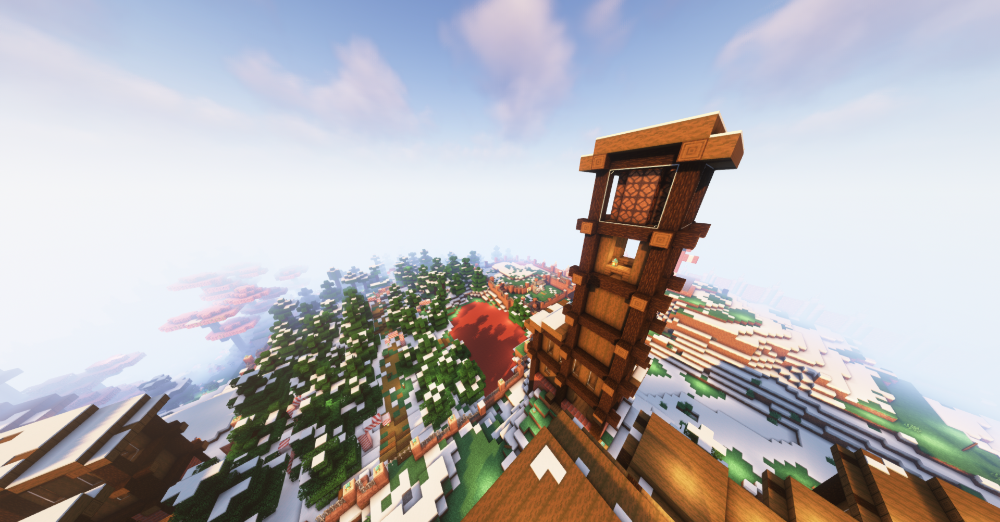
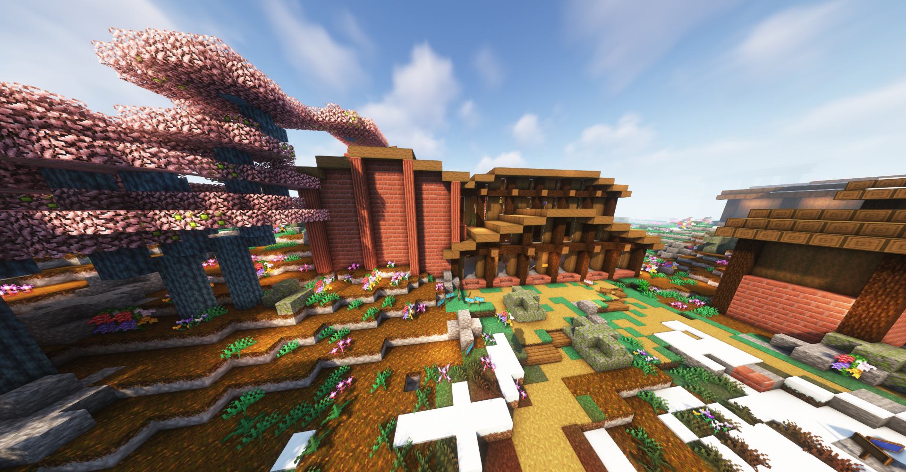

lago de caramelo
memorial para o Winnie
cemitério para honrar entes queridos
centro de sua casa
um estatua para homenagear o Carlos Eduardo
interior da estação
canto do sossego
casa principal do Gengibre
uma estatua em memória de Wallace
O bar do Bricks

Seu farol junto da praça com rio de chocolate

sua estação de trem
interior da estacao pt2